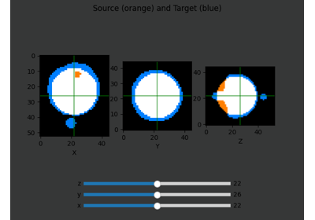
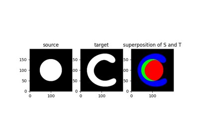
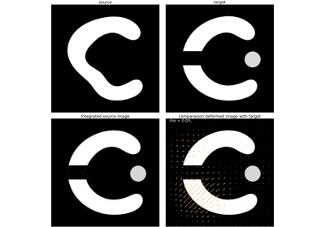
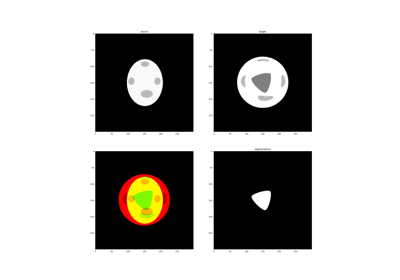
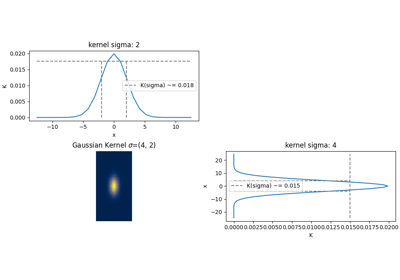

Gallery of examples
The examples below shows functionalities of Demeter-Metamorphosis.
Registration examples
The examples below shows how to make simple registrations with Demeter-Metamorphosis.


Metamorphosis on 3D images

Why we should use semi-Lagrangian scheme?
Why we should use semi-Lagrangian scheme?

MetaMorphosis behaviour with different values of rho
MetaMorphosis behaviour with different values of rho

sphx_glr_auto_examples_1_registration_toyExample_weightedMetamorphosis.py
This toy example was build to simulate a cancer growth in a brain.
Kernel examples
The examples below shows the differents kernels available in Demeter-Metamorphosis and how to use them.

A Gaussian Reproducing Kernel

Utility functions examples
The examples below shows the utility functions available in Demeter-Metamorphosis.
sphx_glr_auto_examples_3_utils_make_ball_at_shape_center.py
A utility function to create a ball at the center of a shape in an image.